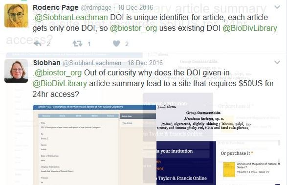

The findability and interoperability of some Permanent Identifiers (PIDs) in use on
the internet and their compliance with the FAIR data principles are explored. It is suggested that the wide
distribution and findability (e.g. by simple 'googling') on the internet
may be more important for the usefulness of identifiers, than the
resolvability of links by one single authority, purportedly
guaranteeing their permanence and authenticity. The prevalence of phenomena such as
link rot implies that the permanence of URLs, PURLs or URIs cannot be
trusted. By contrast, the well distributed, but seldom directly resolvable ISBN
identifier has proved remarkably resilient, with far-reaching persistence, inherent
structural meaning and good validatability, by means of fixed
string-length, pattern-recognition, restricted character set and check digit. Adding
context and meaning to identifiers through namespace prefixes and
object types is also suggested. Arguing for a wide distribution of validatable
identifiers, the conclusion resembles the experience of the boy Marcus in the
novel-based film About a boy, from living with a suicidal mother: It's not
sufficient to rely on one source only for sustenance. You need more than that. You
need backup, in case something happens.
Introduction: Identifiers in science
Identifiers in science may refer to digital or physical objects, or concepts. They
may be general or domain-specific. Among the more prevalent general PID, permanent
identifier types are DOI, Handle and UUID. There are also 'old', bibliographic
identifiers like ISBN. Created in the 1960's and -70's of the print era, how come
they survived into this digital age? Some reasons might be: they are well
distributed across the internet, and widely used by stake-holders (libraries,
publishers, readers). They have a semantic structure, identifying well-defined
objects, and a fairly precise validation mechanism through fixed string-lengths,
limited character-set and check digits. Some of these properties of good identifiers
are shared by DOIs, Handles and UUIDs, or other more domain specific identifiers
used for scholarly data, but seldom all of them simultaneously. Among these
characteristics the main focus here will be on validation, as seemingly somewhat
neglected lately.
Identifiers - why do we need them?
The general purpose of identifiers is to serve as references to the objects
that they are supposed to identify. This requires identifiers to indicate,
preferably in and by themselves, what type of objects they are meant to
identify. Now, far from all identifiers fulfil this requirement. Rather, it is often
left to the names of things to describe the objects identified,
thereby providing context and meaning. Scientific names may or may not be
part of the metadata on the destination page of a PID-URI.
While scientific names are often useful for describing objects (or
at least certain aspects or properties of 'things', organisms), they have other
drawbacks compared to identifiers, some of which were identified by . For example, homonymi and disambiguation should
generally be a lesser problem for globally unique identifiers. And while
concatenations or abbreviations may be problematic in the use of names for
identification, string-length restrictions and pattern limits are useful for
validation of identifiers, as is avoiding white space. Missing or added characters,
all types of misspellings are easier to detect and validate in standardized
identifiers of fixed string-length or well-defined character patterns. Inconsistent
encoding should generally also not be a problem in good identifiers, for which the
set of allowed characters may be limited. However, these assets of some identifiers
may conflict with the legitimate interest in having also transparent, meaningful
PIDs that at least in part "speak for themselves". The result of a compromise
between these two interests may be seen in the Handle (hdl) system
(below).
FAIR principles
The FAIR guiding principles aim to make data Findable, Accessible,
Interoperable, and Re-usable. As
such they concern also metadata in general and identifiers, PIDs, in particular, as
is seen from some of the principles:
The FAIR data principles.
The FAIR principles clearly need interpretation to become fully operational, as
several observers have noted, and such work is also in progress. Further explications of some of the principles are
also available from the originators :
1. To be Findable any Data Object should be uniquely and
persistently identifiable.
1.1. The same Data Object should be re-findable at any point in time, thus
Data Objects should be persistent, with emphasis on their metadata...
1.2. A Data Object should minimally contain basic machine actionable metadata
that allows it to be distinguished from other Data Objects
...
2. Data is Accessible in that it can be always obtained by
machines and humans
...
3. Data Objects can be Interoperable only if:
3.1. (Meta) data is machine-actionable [8. ... Metadata being machine
readable is a conditio sine qua non for FAIRness.]
...
3.3 (Meta) data within the Data Object should thus be both syntactically
parseable and semantically machine-accessible
4. For Data Objects to be Re-usable additional criteria
are:
4.1 Data Objects should be compliant with principles 1-3
4.2 (Meta) data should be sufficiently well-described and rich that it can be
automatically (or with minimal human effort) linked or integrated,
like-with-like, with other data sources
The FAIR principles have some resemblance with the Linked Data rules first fomulated
by Tim Berners-Lee already back in 2006, updated in 2009 and 2010. There is, for example, the insistence on
machine-readability and the linking of data sources with other data. But the FAIR
principles do not necessarily require metadata to be expressed in RDF, as the Linked
Data rules demand. It seems also that Berners-Lee is critical of identifier types
using other schemes than simple HTTP URIs.
Neither the FAIR principles, nor the Linked Data rules say anything explicitly about
validation. Still, particularly for the Interoperability and
Re-usability, it is crucial that metadata can be properly validated
against a schema, as adhering to an accepted metadata standard. And this includes
also identifiers. We must be sure that they are of the type or format they claim to
be, even if they cannot be resolved to a dedicated URI any longer. Failed
validation, e.g. due to simple typos or wrong namespace, may even be one way of
checking why an identifier or URI does not resolve as expected. It is also important
for the possibility to export metadata to another format, thereby promoting the
re-use of data, without exporting also potential errors. Although transformation or
harvesting of metadata might be possible even without validation, the trust in the
results and quality as well as the eventual findability of the data (and so again
the re-usability) might be seriously affected.
For enhanced findability, it is also important that standard, widely distributed
identifiers are used.
Validation of an identifier means ensuring that it is true to its proclaimed type,
for example, making sure that what is flagged as an ISBN is not in fact an ISSN
(real use case), or that the string-length and check-sum is compliant with its type.
A further advantage of promptly validatable identifiers, as against relying
exclusively on resolvability, is that validation can be performed also off-line, by
means of a more or less simple validation-algorithm and a piece of software such as
a resonably good XML-editor.
Resolvable or findable?
In the present FAIR principles the focus is very much on resolvability of identifiers
by an authority , despite the general awareness of
phenomena like 'link rot' and 'reference rot'. It has even been
suggested to put up digital gravestones over disappeared resources, with metadata
from their last known whereabouts serving as epitaphs. A
2013 study in BMC Bioinformatics analyzed nearly 15,000 links in abstracts from
Thomson Reuters’ Web of Science citation index and found that the median lifespan of
web pages was 9.3 years, and just 62% were archived.
This happens although there is an understanding that [u]nique identifiers, and
metadata describing the data, and its disposition, should persist -- even beyond
the lifespan of the data they describe. A
recent study of some 40 research data repositories found that only one of these (3%)
was compliant with the FAIR principle of Accessibility requiring a clear policy
statement (or various examples of data this has actually happened to) indicating
that metadata is still available even if the data is removed. The argument here, though, is not that resolvable,
permanent URIs should be avoided as identifiers; in fact, they often do serve
their purpose of providing a more persistent metadata source than "ordinary", plain
URLs. But, as has been eloquently remarked, "persistent URIs must be used to be
persistent". Persistent, resolvable URIs as
identifiers work by means of a decoupling of the location and the identification
functions of URIs.
The custodian of a web resource maintains the correspondence
between the identifying URI and the locating URI in the resolver’s look-up table
as the resource’s location changes over time. ... The solution comes at a price
because it requires operating a resolver infrastructure and maintaining the
look-up table that powers it.
This is
true of DOIs, as well as Handles, PURLs and URNs. There are in fact numerous cases
when the lookup-table is not maintained and updated as required. That is why it may
be wise not to rely on a single 'custodian' for the resolution of identifiers and
access to associated metadata. It is rather the distribution and use of
identifiers - whether resolvable or not - that is important here. It seems not even
the authors of are true to their own principles,
since three of their references that actually have DOIs are cited without them: . So again, PIDs must be used and cited to remain
permanent. Citations may also serve as a 'means of transportation' to achieve widest possible
distribution. Further, it may be argued that wide distribution is dependent
on good 'validatability', in order not to multiply errors and 'non-resolution' as a
result.
One way to achieve wider distribution of identifiers might be the praiseworthy
initiative of signposting.org (see also: ), using HTTP headers for retrieval of PIDs from simple URLs:
However, the signposting initiative, so far, only redirects the question of use from
PIDs and DOIs to HTTP header links. Again, going back to the question of
resolvability, the relationship between identifiers such as DOIs and URIs/IRIs is
not always straightforward, and sometimes involves a chain of redirects ('303s'),
before reaching eventually a destination holding also the appropriate metadata.. Another reason resolvability
may not be sufficient, even if the metadata is somehow in place, is that the file on
the destination page resolved to is behind a paywall. This is a recent case, where
apparently public domain content more than 100 years old was hidden behind a
DOI-resolver charging 50$ for release of the content:

Tweets about public domain resources behind DOI paywalls.Tweets about public domain resources behind DOI paywalls.
First, it is not true that every object only gets one and only one DOI. It is
possible to mint several DOIs for the same resource by different agents, such as
Dataverse, Figshare, ResearchGate etc. The DOI in question here is: 10.1080/00222930908692639. Secondly, there are some remedies against these
cases, notably the recently launched oaDOI at oadoi.org. We try it out here:
oadoi.org tool finding open access version of a resource referenced by a
DOI behind a paywall.
In several steps this eventually leads us via an API to an XML-file with a link to
the freely accessible fulltext at http://www.biodiversitylibrary.org/part/60220.
But, most often you are not so fortunate to find a free replacement copy of resources behind a paywall. What meets you when tested
in those cases may be this telling message, when tried for the DOI of :
oadoi.org tool not finding open access version of a resource referenced
by a DOI behind a paywall.
And if oadoi.org (apparently just recently replaced by the browser add-on unpaywall.org) fails, identifiers.org SPARQL
endpoint might be useful. But, it does
not necessarily give us an open access URI in return. And it only works if the
potential corresponding URIs have been assigned the property owl:sameAs
just as the submitted subject URI. Unfortunately, in neither of our cases above
these conditions are met.
Assuming we have finally found a single seemingly reliable custodian of our PIDs and
URIs, promising 24/7 resolution and top quality metadata, should we rest content
with that? Most serious lawyers and journalists probably would agree, it is wise not
too judge by the testimony of a single witness, a single source alone. The evidence
of at least two, mutually independent witnesses is generally preferred. Clark
describes multiple resolution as representing a stage in the evolution of
PIDs, that will eventually be surpassed by a more mature age when we supply also
data types to come with the PIDs, in order to make them more machine
actionable . Providing multiple access to, or
identification of resources through PIDs, that are capable of serving
as trustworthy, competent, valid independent witnesses from different moments in
time, at different sites, in different places is a good idea. Thus, we accept
that an object may have multiple PIDs. Ideally these multiple PIDs should
get to "know about" each other as a way towards interoperability.. This can be achieved already, e.g. by means of linked
open data (LOD), sameAs-relationships and tools provided by n2t.net,
oadoi.org and the identifiers.org SPARQL endpoint referred to
above. Multiple identifiers from different namespaces for the same object may even
be desirable in order to ensure interoperability in different environments.. It is also in line with the principle of the semantic
web known as the NUNA, Non-Unique Naming Assumption, implying that
things described in RDF data can have more than one name and any object
may be identified by more than one URI, serving in RDF as 'names' of things.
Proliferating standards cartoon. Source: xkcd.com. CC BY-NC 2.5
However, the conclusion to be drawn from this cartoon and the website yapid.org with regard to PIDs is not that any
identifier is as good as the other. In fact, there are significant differences in
quality between identifiers, particularly in terms of 'validatability' and
'meaningfulness', or 'semantic weight'. We are getting there a bit later.
But first, having referred to linked data and sameAs-relationships as a possible
solution to achieving interoperability, what about long-term sustainability? Are
LOD, relying heavily on URIs, fit for survival? Archival records for long-term
preservation need to be self-sustained, carrying meaning within themselves, while
the references may no longer be resolvable. In e-archives compliant with the
OAIS-model and Trustworthy Digital Repositories standards for self-sustenance, this
means that URIs lacking an inherently meaningful structure will often serve only as
another set of dumb identifiers. Unless they can import some meaning from outside,
through resolution or sameAs links, such opaque, non-resolvable URIs should
henceforth rather be described as "non-semantic".
Which identifiers are FAIR enough?
We must ask about PIDs, Permanent Identifiers, just how permanent are
they really? Even if not always resolvable, are they in general still 'findable',
well distributed over the internet in time and space? Are they 'validatable' (e.g.
through fixed string-length, pattern-recognition, restricted character set, built-in
checksum, built-in type?) Are they FAIR?
Findability: Beginning with the F for findability, for comparison we
go back in time to 'old-fashioned' ISBNs, Internaional Standard Book Numbers.
Publicly declaring what type of objects they are meant to identify, ISBNs are rarely
directly resolvable. But they are widely distributed, they have good
findability in terms of precision hits, as seen by simple
'googling', with good survival rate, longer than the median age of web-pages 9.3
years. For example, look at ISBN 0-14-029161-X: The Diversity of Life / Edward
O. Wilson (2001). Simple googling of 014029161X, unprefixed and without
hyphens results in 57/57 precision hits (date: 2017-01-30). ISBNs could also be
searched in library catalogs, the most comprehensive of which is probably the Karlsruhe Virtual Catalog – KVK
worldwide. Result of the query '014029161X', with the same unprefixed ISBN
without hyphens yields 123/123 precision hits, recall being difficult to compute
since in 55 of 72 catalogs the search could not be successfully processed or no
records were found. To counteract the possibly unfair bias with a modern classic
like this, we try instead an even older, and presumably less well-known example:
ISBN: 2130381030. L'Identité : séminaire interdisciplinaire dirigé par Claude
Lévi-Strauss, 1974-1975 (Paris: PUF, 1983). Googling without prefix
(2130381030) the precision is between 14/39 and 22/50; with prefix (ISBN2130381030)
it reaches as high as 17/18 (date: 2017-01-30).
These results could be compared to similar tests for identifiers of one of the most
well studied organisms of all, the fruitfly Drosophila melanogaster.
Starting with its GBIF ID 5073713,
googling the unprefixed pure number gives the modest precision of 1/107 (date:
2017-01-30). Using instead the Global
Names Resolver to get a UUID v. 5 for Drosophila melanogaster,
<gni-uuid>1bc2f359-47e4-5da6-a748-74676b7c8c5d</gni-uuid>, googling it
either unprefixed or prefixed gives a zero result (0 recall, 0 precision, date:
2017-01-30). Trying instead the same UUID in a general search of all databases of
NCBI, the US National Center for Biotechnology Information), we get 34 'hits' in 13
different databases, but all wrong (i.e. 0 precision) 1bc2f359-47e4-5da6-a748-74676b7c8c5d. Apparently this is because the
default search algorithm ignores the hyphens, or rather replaces them with a 'OR',
so that we get chunks of the string interpreted as e.g. part of a gene locus or
names of clones. Most notably, we get 0 hits in the NCBI Taxonomy database, that on the face of it would seem to be the most
relevant to our search. Going back instead to the GBIF, using our gni-uuid for an
overall search, restricting our search in several steps finally to only species we
still get a result of 120613 'hits', simply too much to make precision all but
negligible. So, while the UUID is imminently validatable, with fixed string-length
and restricted character set, it is neither directly resolvable, nor findable in
terms of search results. To earn significance and importance as identifiers
gni-UUIDs must become more findable and re-usable, for example by ping-back and
auto-update, assigning themselves to the records in the biodiversity database
sources they were drawn from and make use of schema.org and similar to get incoming
links and a better ranking in search engines.
Accessibility: Data and (digital) objects are accessible only in so
far as identifiers are findable or resolvable preferably to open access landing
pages with either direct availability of resources, or sufficient metadata to direct
the user to such an access point. In this respect DOIs are often, but not always, as
good as or sometimes better than ISBNs (for obvious reasons regarding print only
material), while gni-UUIDs as described above are all but useless.
Interoperability and Re-usability are both
intimately associated with 'validatability', as argued above. We will look more into
detail at the performance of different PIDs regarding this below.
DOI: DOIs can look just like anything. Here are some real cases, all
at the time of writing resolvable and with multiple findability also by simple
googling, some of them pretty 'old', although they got their DOIs assigned fairly
recently. One is even from 1977 (doi: 10.1177/030631277700700112), but it still
produces an impressive precision score of 26/26 or 59/59 (date: 2017-01-30), mostly
due to it quite high citation rate, yielding hits for all the citing sources.
Obviously, all these DOIs, whether resolvable or not, vary substantially in
string-length, from just 17 to over 60 characters, some involving abbreviations of
journals or organisations, one an ISBN, and some containing characters in need of
special XML-encoding, different from URI. Note that although the two last items in
the first group are from the same journal, Scientometrics, they are quite
different in structure. Anyway, all the items in both groups are valid DOIs and all
validate against the best we can offer as a schema, with only partial pattern
recognition:
<sch:rule context="identifier[@type='doi']">
<sch:let name="doi-pattern" value="'^(doi:10|10)[.][0-9]{4,}/\S+$'"/>
<sch:assert test="matches(., $doi-pattern, 'i')">All DOI identifiers must start with 10, followed by a minimum of 4 digits, a '/' and a suffix of any length
</sch:assert>
</sch:rule>
DOIs, as we have seen, unlike ISBNs are difficult to validate accurately. Or rather,
it is difficult to find sufficiently discriminatory criteria to distinguish proper
DOIs from fake ones. They have no fixed string-length, to start with, and very
little of character set restrictions. All we can have is a partial
recognition-pattern such as the one in the schematron rule above.
Handle:The Handle identifier system seems fairly easy and handy at a
first glance. Only, it comes in two different flavors. One is the semantically
opaque, which has the structure: Prefix/noid (10079/sqv9sf1), where the
NOID-part (for Nice Opaque Identifier ) is a 7-character
long alphanumeric string from the restricted character set
"0123456789bcdfghjkmnpqrstvwxz", with random minting order.
The other flavor is the semantically transparent, which could be of three different
types: the URL handle: Prefix/local-PID (10079/bibid/123456), the user
handle: Prefix/netid/netid (10079/netid/guoxinji) and the simpler group
handle: Prefix/group (10079/ISPS). While being more instantly "meaningful",
providing context, this kind of Handle, however, will prove less "validatable" in
the sense that there is no longer any fixed string-length or restricted
character-set.
UUID v5 has support within the field of biodiversity taxonomy, as an
important complement to scientific names.. They were
introduced to the field in 2015 by the Global Names Architecture - GNA . The arguments for using them instead of name strings for
certain functions are that they save space as index keys in databases, they have a
fixed string length (36 characters, including the dashes) while scientific names are
of different length. UUIDs do not suffer, as names sometimes do, from encoding
problems that are difficult to detect and they are more easily distinguishable one
from the other than name strings for closely related species variants. Specifically,
it is argued that UUIDs v5 ... can be generated independently by anybody and
still be the same to the same name string... Same ID can be generated in any
popular language following well-defined algorithm. The corresponding Ruby Gem app is described thus:
Creates UUID version 5 out of scientific name string. It uses globalnames.org
domain for DNS namespace. There is a 1:1 relationship between the string and the
corresponding UUID, so it allows globally connect data about a name string
originated from independent sources without a need to negotiate identifiers.
Note, however, that it is actually the specificname string that is
identified here, not the object, the organism, the 'thing itself'. Thus, the
resulting UUID is completely dependent upon the particular name string (with its
encoding), it cannot be used as a bridge between different name forms for the same
organism, telling us that they are naming the same object. This is due to the fact
that it is generated by hashing a namespace identifier and name. By contrast, the UUID v5 is easily validated, e.g. with
an online
validator.
Why context?
Generally speaking, although it is preferable that identifiers be findable and
identifiable also in their unprefixed, pure form, typed identifiers give context by
means of namespace prefixes of a metadata standard, a vocabulary or ontology. They
tell us what kind of identifier it is and sometimes what kind of objects it is used
for (e.g. ISBN), but not always (cf. DOI, EAN, UUID). Most importantly they indicate
what schema, which rules should be used for their validation.
Page claimed that e.g. "dc:title" is adding "unnecessary
complexity (why do we need to know that it's a "dc" title?)" in the JSON
expression:
{ "@context": { "dc:title": "http://purl.org/dc/terms/title" },
"dc:title": "Darwin Core: An Evolving Community-Developed Biodiversity Data
Standard" }
A simple answer is that namespaces are important to retain meaning from context,
serving as a key to interpretation for the future. Self-sustained long-term
preservation should ideally mean in a case like this that the dc specification and
schemas valid at the time be archived together with the records, or at least that
there is provenance metadata including timestamps and namespace of terms used.
Metadatafiles in XML usually have a xsi:schemaLocation indicating which schema to
validate against, possibly also its @version. This information, together with
timestamped metadata elements such as 'dateIssued' should be sufficient to provide
context. For JSON metadata there are name/value pairs such as { "protocol": "doi",
... "createTime": "2017-01-12T10:49:03Z", ...} that could fill the same function.
Secondly, context is just as important for validation of records also in the
present.
A new contextual, integrated, validatable DOI - a BUOI?
As we have seen in the case of Handle above, validatability sometimes comes at a
cost: transparency lost. Are we forced to make a choice between the two, then, and
let identifiers be fully validatable while we let associated, linked scientific
names stand for transparency and meaning? Or, can we create identifiers that are
both fully validatable and at the same time more meaningful, providing context? So,
here we finally suggest such a 'yapid' model for a 'BUOI' (Best Unique Object
Identifier):
Example (expression of this paper): fabio.Preprint.philipson1_v1-1_.2017-03-25.0000-0001-5699-994X
It is a model of a structured, contextual, modular, validatabale identifier. To make
it easier to implement, and more generazibale, there is no requirement of fixed
string-length for the two first modules. This means already existing namespaces and
object types could already be used to create a BUOI.
Each module/section may hold both letter characters and digits from a limited
character set. The full stop (.) was chosen as module separator, since it works well
in both xml- and http-environments, without encoding, and is not subject to
confusion as sometimes hyphens and dashes (en-dash and em-dash) can be. It also
works for tokenization of strings. The object type identified in the second module
should belong to the initial namespace prefix. Every namespace can have as many
object types as it likes. Namespace schemas could also define valid data
types for their different object types, thus moving a step further towards
supplying data types to come with the PIDs, in order to make them more
machine actionable.
The scalability of the BUOI will mainly depend on the 10 character object id-module
and how restricted the permitted character set is. A character set restricted to
e.g. [A-Za-z0-9] will still have a possible of 6210 unique permutations,
within each namespace and object-type, still better than the 7 character Handle with
NOID. But if this will not be sufficient, the permitted character set will have to
be expanded. It is also conceivable, to allow for integration of already existing
identifier schemes, that a namespace sets its own character set and string-length
restrictions, as long as these are declared in the validation schemas of that
namespace or they have otherwise well-known validation algorithms. Now there are
also narrow identifier namespaces that do not have as yet different object types
defined, possibly since they comprise basically only one type of object. Such is the
case basically for e.g. ISBNs and ISSNs. To allow also for these in the BUOI model,
we suggest as default second module 'NOT' = No Object Type. So we could
have BUOIs expressing e.g. an IGSN, International Geo Sample Number:
The identifier should thus be fully validatable as a whole or in part (modules) in
the corresponding namespace(s). Possibly the version and last two modules might be
optional, but they are meant to offer built in data provenance. For organisation
identifiers (org.ids), we are still awaiting a common standard like the ORCID for
persons. Thus, the BUOI identifier should be right-truncatable so that the same
object id from different dates and registrants could easily be searched for.
The resulting BUOIS should be minted within the corresponding namespaces, who would
also be the 'custodians' and resolving authorities of their BUOIS, responsible for
their uniqueness within their namespace. Another task would be to monitor and assign
sameAs-properties to these BUOIs when identical twins of the same 'thing' are
detected in other namespaces.
It has been suggested that in order to build more connected, cross-linked and
digitially accessible Internet content it is necessary to assign
recognizable, persistent, globally unique, stable identifiers to ... data
objects.. The model proposed here for a BUOI aims to make it
fully recognizable, universally unique, stable, but always in a well-known context,
seldom alone, and with great potential for backup.
Clark, J. (2016).
PIDvasive:_What's possible when everything has a persistent
identifier? PIDapalooza, November 10, 2016. Retrieved Jan 16, 2017.
http://dx.doi.org/10.6084/m9.figshare.4233839.v1
Coyle, K. et al.(2014). How
Semantic Web differs from traditional data processing. RDF
Validation in the Cultural Heritage Community. International Conference on
Dublin Core and Metadata Applications, Austin, Oct. 2014. Date accessed: 24
Mar. 2017. http://dcevents.dublincore.org/IntConf/dc-2014/paper/view/311
Doorn, P., Dillo, I. (2017).
Assessing the FAIRness of Datasets in Trustworthy Digital Repositories:
A Proposal. IDCC Edinburgh, 22 February 2017. http://www.dcc.ac.uk/webfm_send/2481
Duerr, R.E. et al. (2011).
(2011). On the utility of identification schemes for digital earth
science data: an assessment and recommendations . Earth Science
Informatics 4:139. ISSN: 1865-0473 (Print) 1865-0481 (Online) http://dx.doi.org/10.1007/s12145-011-0083-6
Dunning, A., de Smaele, M., Böhmer,
J. (2017). Are the FAIR Data Principles fair? Practice Paper. 12th
International Digital Curation Conference (IDCC 2017), Edinburgh, Scotland,
20 - 23 February 2017. https://doi.org/10.5281/zenodo.321423
Force11 (2016b). Guiding
Principles for Findable, Accessible, Interoperable and Re-usable Data
Publishing version B1.0.https://www.force11.org/fairprinciples
Force11 (2016). Guiding
Principles for Findable, Accessible, Interoperable and Re-usable Data
Publishing version b1.0 San Diego, CA: FORCE11 https://www.force11.org/node/6062/#Annex6-9
Guralnick, R. et al. (2015).
Community Next Steps for Making Globally Unique Identifiers Work for
Biocollections Data. ZooKeys 494: 133–154. http://dx.doi.org/10.3897/zookeys.494.9352
Hennessey, J., Xijin Ge, S.
(2013). A Cross Disciplinary Study of Link Decay and the
Effectiveness of Mitigation Techniques. Proceedings of the Tenth
Annual MCBIOS Conference. BMC Bioinformatics, 14(Suppl 14):S5.http://dx.doi.org/10.1186/1471-2105-14-S14-S5
Hornby, N. (1999). About a
boy. Indigo, 1999.ISBN:
978-0-575-40229-4.
Klein, M., Van de Sompel, H.,
Sanderson, R., Shankar, H., Balakireva L., Zhou, K., Tobin, R. (2014).
Scholarly Context Not Found: One in Five Articles Suffers from Reference
Rot. PLoS ONE 9(12): e115253. http://dx.doi.org/10.1371/journal.pone.0115253
Jones, SM., Van de Sompel, H.,
Shankar, H., Klein, M., Tobin, R., Grover, C. (2016). Scholarly Context
Adrift: Three out of Four URI References Lead to Changed Content.
PLoSONE 11(12): e0167475. http://dx.doi.org/10.1371/journal.pone.016747
Patterson, D. et al. (2016).
Challenges with using names to link digital biodiversity
information. Biodiversity Data Journal 4: e8080 (25 May 2016). http://dx.doi.org/10.3897/BDJ.4.e8080
Wass, J. (2016). When PIDs
aren't there. Tales from Crossref Event Data. PIDapalooza,
Reykjavik, November 2016. Retrieved: 11:57, Mar 20, 2017 (GMT). http://dx.doi.org/10.6084/m9.figshare.4220580.v1
Wilkinson, M. D. et al. (2016).
The FAIR Guiding Principles for scientific data management and
stewardship. Scientific Data 3:160018. http://dx.doi.org/10.1038/sdata.2016.18
Zhou, K. et al. (2015). No More 404s:
Predicting Referenced Link Rot in Scholarly Articles for Pro-Active
Archiving. In: Proceedings of the 15th ACM/IEEE-CE on Joint
Conference on Digital Libraries. JCDL '15, p. 233-236. http://dx.doi.org/10.1145/2756406.2756940